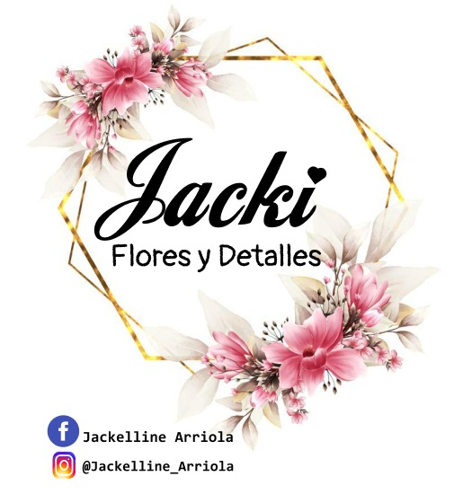

<!-- NAVBAR estilo Jacky Flores adaptado para Real Elegance -->
<div class="cajaNav">
    <nav class="navbar navbar-expand-lg navbar-light fixed-top glass-nav">
        <div class="container" id="navbar-container">

            <!-- Puedes dejar el logo o reemplazarlo con texto bonito -->
            <a class="navbar-brand" href="#navbar-container">
                
                <!-- O puedes usar texto con ícono 🌸 -->
                <!-- 🌸 Real Elegance Detalles -->
            </a>

            <!-- Botón colapsable para móvil -->
            <button class="navbar-toggler border-white " type=" button" data-bs-toggle="collapse"
                data-bs-target="#navbarNav" aria-label="Toggle navigation">
                <span class="navbar-toggler-icon"></span>
            </button>


            <!-- Menú colapsable -->
            <div class="collapse navbar-collapse cajaMenu " id="navbarNav">
                <ul class="navbar-nav ms-auto ">
                    <li class="nav-item">
                        <a class="nav-link" href="#bienvenidos">
                            <i class="bi bi-house-door-fill me-2"></i>Inicio
                        </a>
                    </li>
                    <li class="nav-item">
                        <a class="nav-link" href="#about">
                            <i class="bi bi-people-fill me-2"></i>Quienes Somos
                        </a>
                    </li>
                    <li class="nav-item">
                        <a class="nav-link" href="#catalogo-container">
                            <i class="bi bi-card-list me-2"></i>Catálogo
                        </a>
                    </li>
                    <!-- Si quieres más ítems puedes añadirlos igual que los demás -->
                </ul>
            </div>
        </div>
    </nav>
</div>